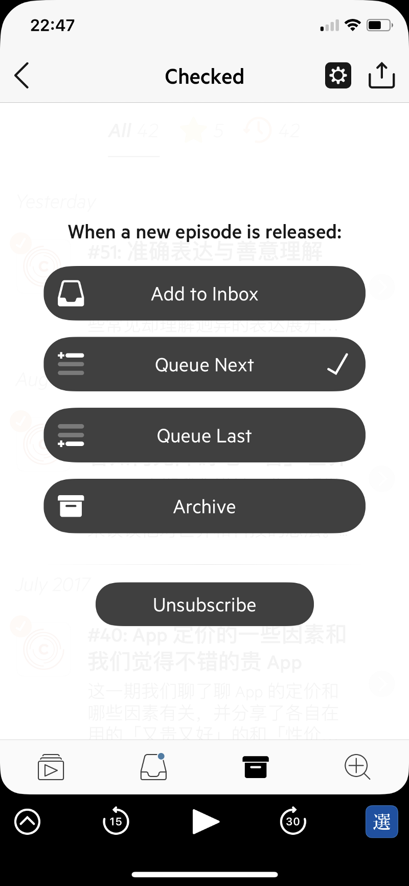
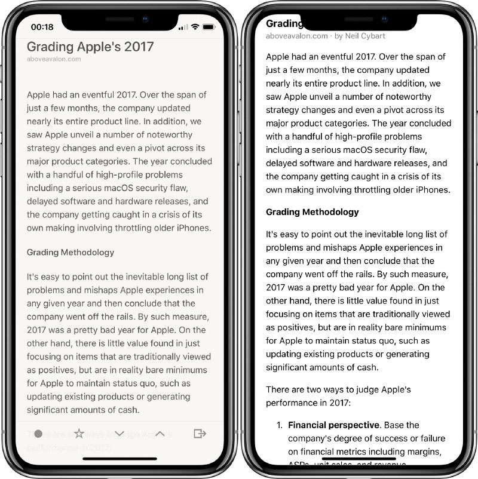
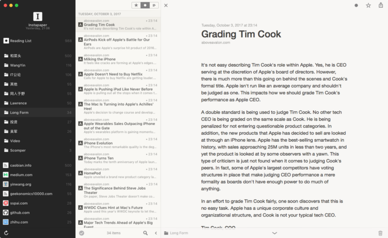
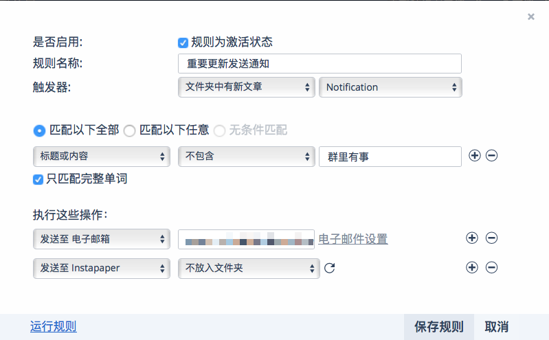
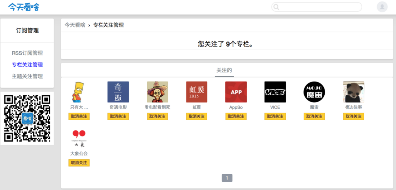
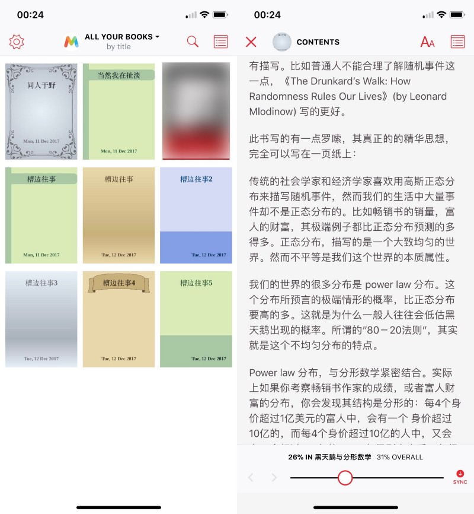
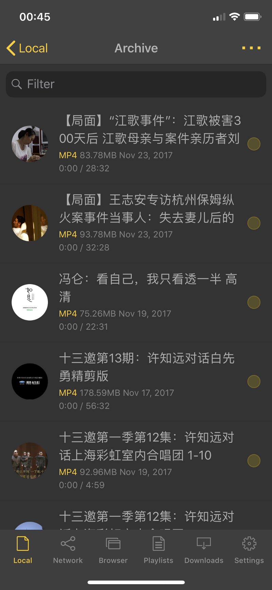
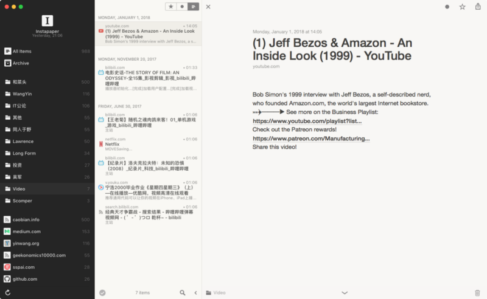

想法的原点
在信息资讯过剩的时代，相信很多人都会面临文章太多读不完，播客、视频太多消化不完的问题，搭建一个高效自动化的信息输入系统是我在2017年完成的最有成就感的事，不仅提高了消费信息的效率，还极大缓解了焦虑。它可以实现一个微信公众号更新的文章自动添加到Instapaper并发送通知，也可以通过爬虫离线阅读一个博客的所有文章，甚至可以把博客所有内容做成电子书，还可以存放所有想要看的视频。
这个系统源于Castro这款软件的启发

面对一个播客节目，有4个优先级选项，分别是
- Add to Inbox: 需要看具体节目决定要不要加入playlist
- Queue Next:自动添加到Playlist的列表首位，无条件第一时间收听
- Queue Last: 自动添加到Playlist的列表末位，无条件收听，优先级较低
- Archive:只做存档备份
由此我希望我的系统有如下功能
- 有一个reading list/playlist存放着我要读/听/看的内容，这样任何时候你想读点/看点什么的时候，经过挑选的内容已经在列表里等着你了，拿起来就读，而不用先花时间挑选内容，也不用把时间浪费在刷各种timeline上
- 对信息源提供2种不同优先度的处理：每篇文章必读的信息源的内容自动加入reading list，选读的信息源根据更新的具体内容手动决定
- 当有必读信息源内容更新时，发送通知，最喜欢的节目更新（比如checked或者爱否科技）了当然想第一时间知道
接下来介绍下用作Playlist和Inbox的工具。
自动化工具
Playlist
我用稍后阅读服务Instapaper作为reading list/playlist的工具，用于存放所有我觉得值得阅读的文章和值得看的视频。这里之所以选Instapaper而不是Pocket的原因是因为我比较喜欢Instapaper的UI以及文件夹的设计，Home视图相当于Instapaper的inbox，存放着所有等待被归类或者无法被归类的内容，其他文件夹放着对应内容，比如Video存放所有视频，作为视频的Playlist，Longform放着所有需要半个小时以上阅读时间的长文章。

在iOS端，我之前一直使用Reeder作为Instapaper的客户端，因为Reeder阅读界面文字和背景的配色对比度较低，更适合长时间阅读。但是换了iPhone X之后，我又换回了Instapaper的官方客户端，因为Reeder的全面屏优化不够好，在阅读界面的顶端和底端都有一条bar，无法自动隐藏，给开发者邮件反馈也没有收到回复。

在Mac平台，似乎并没有比Reeder更好的Instapaper客户端。
Inbox
我用RSS作为Inbox的工具，用于收集所有信息源的更新，快速浏览内容，从中挑选值得阅读/观看的文章/视频，加入playlist。App方面我用的是Reeder。Reeder算是RSS类App的标杆，出色的稳定性、丰富的快捷键支持，可以接入多种RSS服务以及漂亮的UI都让它与众不同。更重要的是，支持iOS和Mac双平台。
下面介绍下如何针对文章、音频和视频搭建这套系统。核心是通过RSS搭建整套系统，对订阅方式不直接的信息源（如微信公众号和视频平台）进行处理，以及不能被订阅的信息源（如整个博客）进行额外处理。
文章
RSS订阅源
大部分的信息源都可以用RSS订阅，就连Twitter和微博都可以，只不过我觉得Twitter和微博的内容用Tweetbot和Cosmos来阅读体验更好。
订阅了所有信息源之后，对于选读信息源，通过在Reeder中快速浏览标题的方式筛选出值得进一步阅读的内容，一键添加到Instapaper中（在Mac上的Reeder中，快捷键i）。
对于必读信息源，比如aboveavalon的文章我每篇必读，通过在RSS服务中添加规则来实现自动添加到Playlist和发送通知的功能，我使用的是Inoreader，下面以Inoreader为例

- 在Inoreader中创建一个文件夹，我命名为Notification，把所有必读的订阅源放入到这个文件夹中
- 添加如下规则
- 把“Notification”中有文章更新作为触发器
- 执行：发送至Instapaper，实现自动添加到reading list
- 执行：发送邮件至个人邮箱，实现即时通知功能
- 还可以在此基础上添加关键词过滤，过滤掉自己不想要的内容
至此，实现了对必读自动化添加至reading list并通知的功能。
这里吐槽下Inoreader，之前免费用户是可以添加一条规则的，后来修改成了必须是入门级付费用户才可以添加一条规则，不得不订阅了Inoreader。
微信公众号
对于微信公众号，转成RSS订阅即可。只不过提供这种服务的网站命运有点像科学上网，一出名就死，之前的微广场和狗耳朵都已经挂掉了，目前我在用的是今天看啥（这是我的邀请链接，你和我各获得所付费金额的10% 作为奖励），还算稳定快速。

付费内容
2016年算是知识付费的元年，各种付费内容兴起，对于类似于「得到」一样把内容限死在App里阅读的内容并没有什么好办法，但是对于邮件发送的会员通讯，只要设定自动转发到Instapaper邮箱，即可同时实现自动化添加至reading list并通知的功能。
博客爬虫下载
博客比起10年前已经没落了很多，但是仍有一些非常值得阅读的博客，比如我很喜欢的物理研究者万维钢的博客学而时嘻之（后来意外发现万维钢也是中科大校友，顺便说下他后来到「得到」开的专栏水平并不如之前博客高，与其花钱读专栏，不如把之前的博客读一遍），再比如和菜头的槽边往事。前者有100多篇文章，后者有5000多篇文章，一篇一篇手动保存到Instapaper显然是不现实的，于是我通过Python爬虫来实现。可以把所有文章都保存到Instapaper里的一个文件夹，也可以把所有文章做成一本电子书，我在这里更推荐电子书，因为电子书阅读起来相对方便一些，也更清楚的知道阅读进度。
每个博客的架构不一样，Python程序需要根据特定博客进行针对性调整，我以槽边往事为例，大概讲下博客爬虫大体思路
- 获取所有文章链接：槽边往事的每篇文章链接最后都是一个数字，通过遍历从第一篇到最后一篇，验证哪些数字对应的是真正的文章，并把所有有效链接保存到一个文档里
- 如果是希望添加到Instapaper，把所有链接通过Instapaper API导入即可
- 如果是想要制作电子书，把所有链接做成一个HTML的index文件，然后需要用到Calibre这个电子书管理软件的recipe来自动抓取
过程中需要用BeautifulSoup或者pyquery库做HTML分析，也需要对HTML语言有略微的了解，具体技术细节可以参考如下两篇文章，如果有人真的很感兴趣我回头也可以专门写文章说明

电子书制作好之后就可以愉快地阅读了，这里我选择的Epub阅读器是Marvin，原因在于几乎所有影响阅读的细节都可以在设置中调整，可以完全定制化成自己喜欢的样子，我喜欢模仿Reeder的样子把背景和字体的对比度降低，这样长时间阅读不会觉得刺眼和疲劳。而且阅读界面可以显示当前位置在一篇文章中的进度，也同时显示在整本书中的进度，非常方便消化上千篇文章。把整个博客数千篇文章保存成几本电子书的过程非常有满足感，有种整个博客尽在掌握的感觉。
音频
播客
播客就如在开头举的例子一样，用Castro完成整个流程。通过针对不同播客的不同优先级的设定，让喜欢的播客节目在Queue中静静的躺着。
访谈节目视频
除了播客之外，可以用听觉带宽来处理掉的还有访谈节目的视频。很多访谈节目动辄几个小时，实在没有时间花几个小时坐在电脑前看完一场访谈。这里就要用到Nplayer这款支持在息屏状态下后台播放视频的App了。

有如下几种处理方式
- 如果你是YouTube Red会员，直接通过YouTube客户端下载视频再背景播放就可以了
- 如果不是，把视频下载下来导入Nplayer背景播放即可。这里推荐Nplayer是因为它可以倍速播放和背景播放，也因为它本来就是一款很优秀的视频播放器，详见JailbreakHum的Best of系列。
- 还可以通过Nplayer来下载YouTube的视频，离线保存到手机中，再背景播放即可，具体方法是在Nplayer的浏览器中播放YouTube的视频，然后到播放列表选最近播放，选中并长按出现下载按钮下载
- 也可以通过Simple YouTube MP3 Button这款油猴脚本来把YouTube 影片以 MP3 音频文件格式下载到本地。
- 通过http://podsync.net/把YouTube频道转为Podcast链接，用pocket casts订阅后，可以用播客的方式处理YouTube视频！即自动更新最新一期视频，离线播放！
视频
我经常看的视频网站是Bilibili和YouTube，所以只要把Bilibili上自己喜欢的Up主以及YouTube上喜欢的频道通过RSS订阅即可实现自动添加到Instapaper和通知的功能，在Instapaper中我建了一个Video文件夹，用来作为视频的playlist。

订阅Bilibili的方法参考Minja的一键生成 Bilibili、知乎专栏以及更多网站源，RSS 还能这么订阅即可。订阅YouTube频道的方式也类似，需要把频道id添加到“https://www.youtube.com/feeds/videos.xml?channel_id=”后面即可。以Marques Brownlee的频道为例，频道主页是
https://www.youtube.com/channel/UCBJycsmduvYEL83RU4JriQ
那么对应的RSS订阅地址是
https://www.youtube.com/feeds/videos.xml?channel_id=UCBJycsmduvYEL83RU4JriQ
碎片化消化
现在Instapaper中有了一个保存着所有值得阅读文章的reading list，一个保存着所有值得看的视频的playlist，更新的优质内容也会被自动添加进去，这么多内容怎么消化掉呢？
我利用所有的碎片化时间和垃圾时间来阅读Instapaper里保存的文章，比如在通勤途中，在排队时，在任何需要等待的那几分钟里，都可以拿出来读完一篇Instapaper中的文章，再也不会觉得等待是一种浪费时间或者烦恼，每天都能利用碎片时间读完5–10篇文章。
利用可以一心二用的时间来听播客和访谈节目，比如做家务时，洗澡时，做饭时，也习惯了1.5倍速播放，一年下来听完了好几百个小时的播客节目。视频就和很多人一样，配饭食用。
这么做的好处在于几乎没花什么额外时间来消费内容，而且极大缓解了过多内容带来的焦虑感：我知道所有值得消费的内容都被保存在Instapaper的列表中，看完一篇Archive一篇，非常安心，有碎片化时间或者一心二用时间了就打开Instapaper进行阅读/看视频，再也不用对着Safari几十个打开的Tab感到焦虑，也极大的利用了垃圾时间和碎片化时间。
以上就是我的整个信息输入系统，playlist的存在让人安心缓解焦虑，自动化添加到playlist节约了时间和注意力，即时通知可以让我第一时间阅读和收看最喜欢的内容。